Node-RED intermedi
Ara que ja sabem com funcionen els nodes i com podem crear un flux de dades senzill, anem a veure com podem fer coses més complexes amb Node-RED. Per fer-ho, analitzarem alguns exemples de fluxos que heu important des d'Aules amb l'arxiu Basic nodes operations.
Nodes de seqüències
Els nodes de seqüencies permeten actuar sobre una seqüència de missatges, o crear-ne una de nova. Això ens permet fer coses com filtrar missatges, dividir-los en parts, o afegir-los a una llista.
Split
El node split permet dividir un missatge en parts. Per exemple, si tenim un missatge amb un text que conté diverses paraules, podem dividir-lo en tantes parts com paraules hi hagi si especifiquem l'espai en blanc com a separador. Això ens permetrà actuar sobre cada paraula de forma independent.
A més de l'espai en blanc, podem utilitzar qualsevol altre caràcter com a separador en l'apartat Split using o Dividir usando del node.
A banda de text, també podem dividir un array en les seues parts, o un objecte en les seues propietats, tal com podeu veure a la imatge.
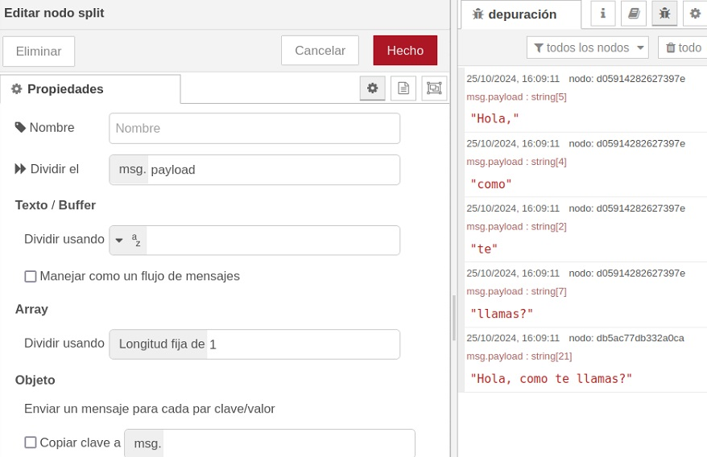
Join
El node join permet unir les parts d'un missatge en un únic missatge d'eixida. Per exemple, si tenim un array amb diverses parts, podem unir-les en un sol missatge.
També podem treballar amb msg.parts. El funcionament de msg.parts en NodeRED és similar al de msg.payload, però en lloc de contenir el valor del missatge, conté informació sobre la part del missatge que estem tractant. Això ens permet, per exemple, unir les parts d'un missatge en un ordre diferent al que tenien inicialment. També podem fer que el receptor del missatge espere a que li arriben totes les parts per executar alguna acció.
Ací teniu un exemple d'ús de split i join. El que fa el flux és agafar una cadena, dividir-la en paraules, i enviar el resultat per un costat a un node debug que mostrarà per pantalla els diferents missatges que li arriben (les diferents paraules), i per altre costat li envia el mateix resultat a un node join que torna a juntar les paraules i les envia a un altre Debug que mostra la frase reconstruïda.
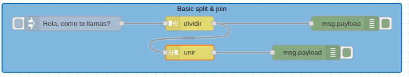
Una altra utilitat de join, com hem comentat, és unificar diferents missatges en un únic missatge. Se pot fer de manera automàtica o manual. Per exemple, si tenim un sensor que ens envia la temperatura i la humitat en dos missatges diferents, podem utilitzar join per unir-los en un sol missatge. Veiem un exemple:
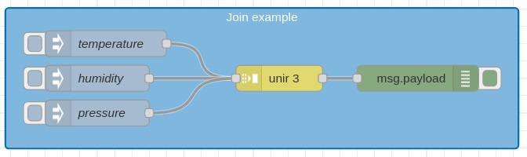
En este flux, tres nodes inject envien una dada diferent cadascun. Amb la etiqueta topic definim el nom de la propietat del missatge que contindrà la dada. Després, el node Join uneix els tres missatges en un sol missatge, i el node debug mostra el resultat. Fixeu-vos que el node join sap que ha d'esperar fins que li arriben els 3 missatges abans d'unir-los i enviar-los al node debug.
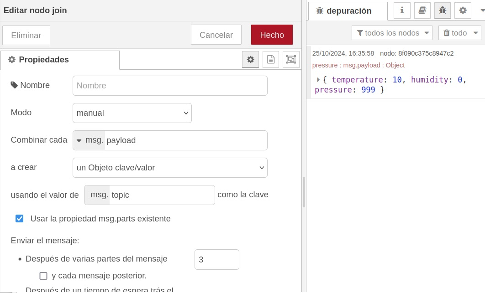
Sort
El node sort permet ordenar les propietats d'un missatge, o una seqüència de missatges. L'ordre pot ser ascendent o descendent. Se poden definir molts criteris d'ordenació diferents, o també utilitzar msg.parts per ordenar els missatges. Veiem un exemple molt senzill on el node inject envia un JSON amb un array de números, i el node sort els ordena. En les propietats del node sort podem veure com estem utilitzant com a clau d'ordenació el valor de l'element.
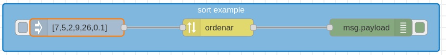
Batch
El node batch permet crear seqüències de missatges seguint certes regles. Hi ha tres formes de seqüenciar els missatges:
- per quantitat de missatges: agrupa missatges en seqüències d'una longitud determinada
- per intervals de temps: agrupa els missatges que arriben en un determinat interval de temps
- concatenar seqüències: agrupa distintes seqüències en una sola
A continuació podeu veure un exemple on els nodes join, batch, split i sort treballen de manera conjunta amb unes seqüències de números que envien dos nodes inject.
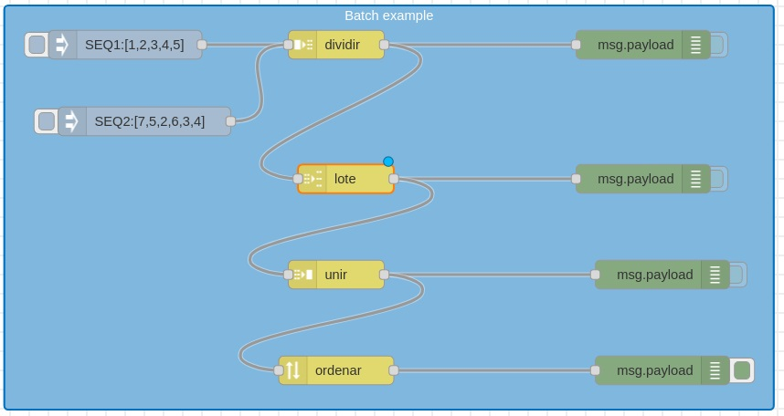
Nodes de funció
Els nodes de funció ens permeten executar codi JavaScript o fer altres operacions sobre els missatges que passen pel flux. Això ens permet fer moltes coses, com modificar el missatge, filtrar-lo, o crear-ne de nous. Hem vist abans un exemple amb el qual convertiem un timestamp en una data llegible. Això ho hem fet amb el node function
Exemple igualment senzill: tenim un sensor que ens envia la temperatura i la humitat en dos missatges diferents. Volem que si la temperatura és superior a 30ºC, s'envie un missatge d'alerta. Per fer-ho, utilitzarem un node function que comprovarà si la temperatura és superior a 30ºC, i si ho és, enviarà un missatge d'alerta.
La funció seria així:
if (msg.payload.temperature > 30) {
return {payload: "Alerta: temperatura superior a 30ºC"};
}
De totes maneres, a banda del node function hi ha altres dins del grup Función. Anem a veure alguns dels més importants.
Switch
El node switch ens permet fer bifurcacions en el flux segons el valor d'una propietat del missatge. Per exemple, si tenim un sensor que ens envia la temperatura i la humitat, podem utilitzar switch per enviar un missatge d'alerta si la temperatura és superior a 30ºC, i un altre si la humitat és superior al 70%.
Per fer això anem a necessitar també el node Change.
Change
El node change ens permet canviar les propietats d'un missatge. Per exemple, el nostre cas anterior, podem afegir una propietat alert al missatge si la temperatura és superior a 30ºC o si la humitat és superior al 70%. També podem canviar el valor d'una propietat, o eliminar-la. Fins i tot podem, si ens interessa, modificar el valor de Payload.
El node Change del nostre exemple quedaria així:
Ara podem combinar els nodes Switch i Change per enviar un missatge d'alerta si la temperatura és superior a 30ºC o si la humitat és superior al 70%, o simplement mostrar els valors si són normals.
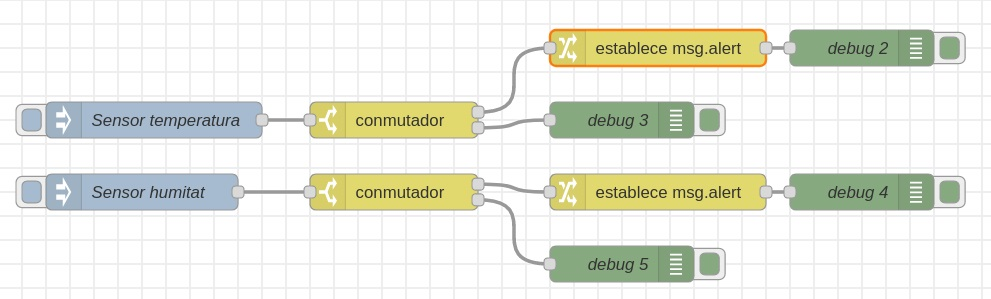
El Switch de la temperatura té dues eixides:
- la 1 si el valor és major que 30, i la 2 si no ho és. La 1 porta al node
Changeque afegeix la propietatalertal missatge, i finalment el nodedebugmostra l'alerta. La 2 porta directament al nodedebugque mostra el missatge transformat en un JSON llegible.
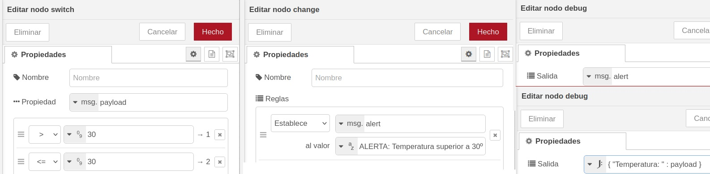
El Switch de la humitat té dues eixides:
- la 1 si el valor és major que 70, i la 2 si no ho és. La 1 porta al node
Changeque afegeix la propietatalertal missatge, i finalment el nodedebugmostra l'alerta. La 2 porta directament al nodedebugque mostra el missatge transformat en un JSON llegible.
L'esquema és el mateix que hem vist per la temperatura.
Random
El node random ens permet generar valors aleatoris. Això pot ser útil per simular sensors, o per fer proves, com anem a fer a continuació.
En l'exemple anterior de la temperatura i la humitat, si volem saber què passa al canviar els valors d'entrada hem d'editar el node inject cada vegada. Utilitzant un node random, podem fer que el node d'injecció li envie una senyal al random i que este genere els valors aleatòriament. A més, com sabem, podem saber que el node inject envie una senyal cada cert temps per a que se generen els valors.
El nostre exemple anterior, utilitzant nodes random per generar els valors, quedaria així:
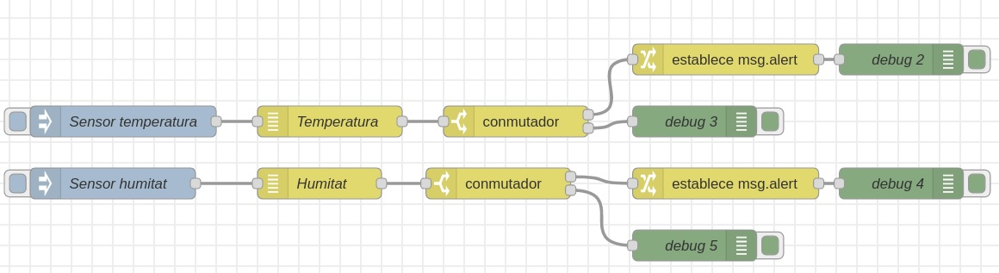
El node random només genera valors numèrics. Per a generar altres tipus de valors, podem utilitzar el node data-generator, que segurament haurem d'instal·lar des de la paleta de la dreta.
Amb data-generator podem generar dades amb sentit, textos que tinguen un significat. Per exemple, li podem dir que genere noms ficticis, adreces i poblacions inventades, i també numeros que estiguen dins d'un rang determinat. Ací teniu un exemple de generador de dades d'una persona:
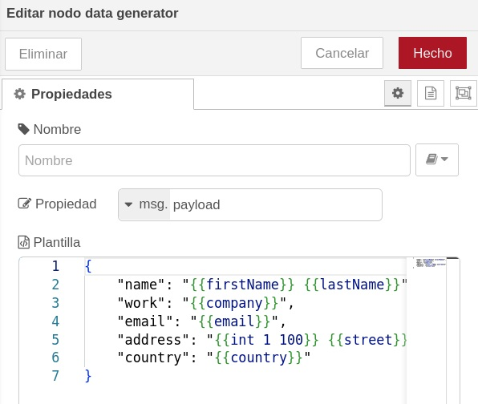
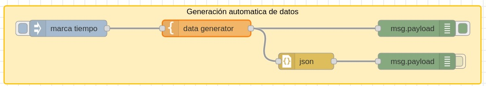
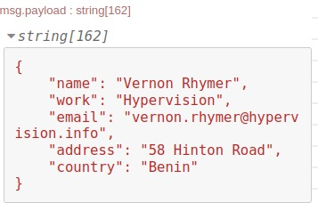